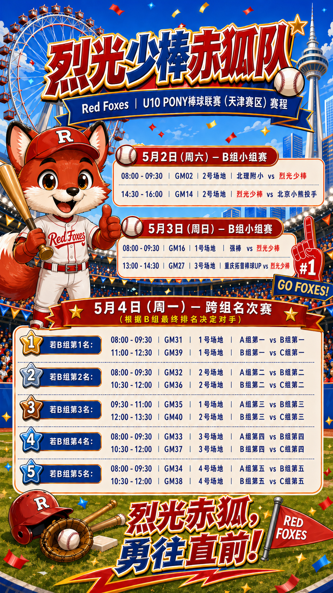

烈光少棒（赤狐队）U10 PONY天津赛区赛程

📅 小组赛：5月2-3日 | 跨组名次赛：5月4日（基于小组排名）
💡 温馨提示：5月4日的具体场地和对阵将取决于小组赛最终排名，请密切关注群通知！
场地与器材规格
U10组场地参数
18.29米
垒间距
14.02米
投球距离
6局/90分钟
比赛时限
用球与球棒
- 使用软式BR350球
- 使用软式金属棒
- 禁止使用：碳纤维棒、包胶弹力棒、两段式球棒
比赛时间与赛制
| 项目 | 具体规定 |
|---|---|
| 比赛时长 | 每场6局或限时90分钟 |
| 提前结束条件 | 三局相差15分 / 四局相差10分 |
| 时间截止 | 一局结束后剩余不足10分钟，不再新开一局 |
| 后攻队领先 | 半局结束领先时可结束比赛 |
| 小组赛 | 接受平局 |
| 淘汰赛平局 | 进行延长局，第7局起一、二垒放跑垒员 |
延长局规则
自第7局或正常时间结束后的下一局起，一、二垒放跑垒员（应轮击击球员的前两名击球员），直至比赛分出胜负。
投手限制（严格执行）
超局投球违规将导致该场比赛 0:20告负！
| 限制项目 | 具体规定 |
|---|---|
| 单场限制 | 同一名投手一场比赛不能投球超过 2局 |
| 3天累计 | 同一名投手3天之内累计投球局数不能超过 10局 |
| 局数计算 | 登板即为一局 |
投手安全规定
- 比赛进行过程中，裁判可进行无故触身球3次，取消投手该场比赛资格
- 裁判有权力判定故意触身球，并驱逐相关队员离场
教练员进场指导规则
3次
每场比赛可进场指导投手
更换投手
同局指导两次需更换投手
1次
延长局每三局可指导
间接指导
教练员与队员交谈后，该队员与投手交谈，视同指导一次
盗垒与跑垒规则
- 跑垒员可盗垒
- 在球未到达或通过本垒板之前不可离垒
- 一旦投手持球踏上投手板投球，而球未到达或通过本垒板，跑垒员离垒即被宣告出局，该球为死球
DH规则
U10组不执行DH（指定打击）规则。
比赛流程与纪律
赛前准备
- 比赛开始30分钟前上交该场比赛的上场队员名单
- 未列入上场名单的队员，不能参加本场比赛
- 比赛开始15分钟后，如某一队到场队员人数不足9人，按 0:10判负
- 如双方均未按时到齐9人到场，则双方无成绩，不积分
- 如球队只有9人到场，受伤后至少8人可继续，受伤者后续棒次以出局计
攻守交换
- 裁判员宣布交换攻守后，双方队员要迅速跑上跑下交换攻守
裁判权威
- 各队教练员、运动员要尊重裁判
- 裁判员的判罚是比赛场上的最终判罚
- 任何人不能有谩骂、侮辱的行为，或拖延比赛的行为
- 一旦违反，将按国家体育总局相关条例予以处罚
天气与比赛中断
- 如遇不可抗力因素（如天气）中断比赛，依据主审裁判意见可提前结束比赛
- 比赛结果在双方打满3局（三局下半时后攻队领先也视为打满3局）或时间超过1小时的情况下比分有效
- 如不满3局且时间未满一小时，比赛无效，择期再赛
积分与排名
积分规则
| 比赛结果 | 积分 |
|---|---|
| 胜一场 | 3分 |
| 平一场 | 1分 |
| 负一场 | 0分 |
排名依据（积分相等时）
- 相互间的胜负决定名次，胜者在前
- 相互间的比赛失分少者在前
- 相互间比赛得分多者名次在前
- 全部比赛失分少者在前
- 全部比赛得分多者在前
- 以上方式如仍相等，则由裁判抛硬币决定名次
申诉与资格
本场比赛如有资格申诉，需检举人举证由组委会经仲裁委员会进行仲裁；如违反有关资格规定，违规方被判定本场比赛结果为 0:20负；比赛结束后超过 1小时，不再接受本场上诉。
- 比赛中向临场裁判的质询必须由主教练提出，其他人员提出的不予接受
- 凡向技术委员会提出申诉的队伍，必须在赛后1小时内提出申诉书
- 需领队签字并上缴申诉金现金人民币 3000元，否则不予受理
- 凡胜诉申诉费退回；若驳回，申诉费上缴组委会